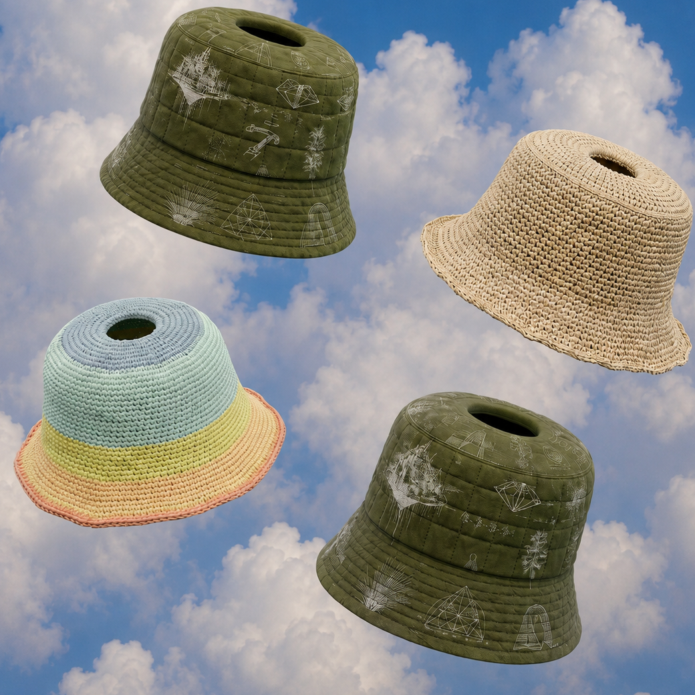
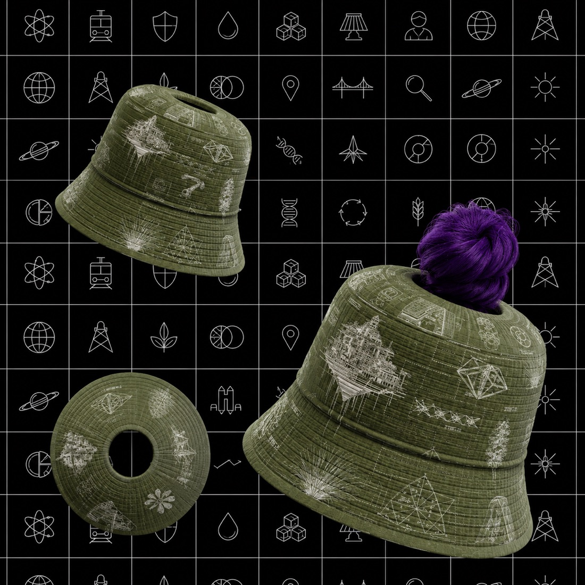
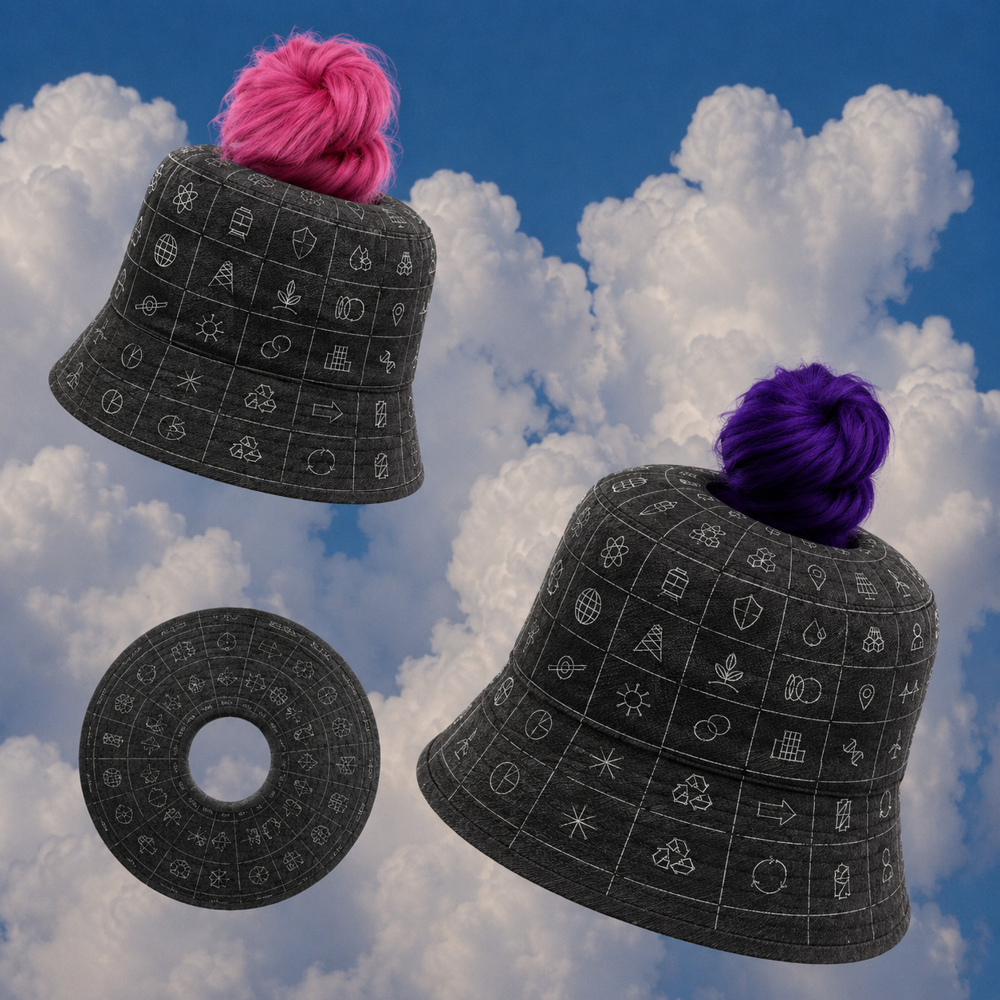
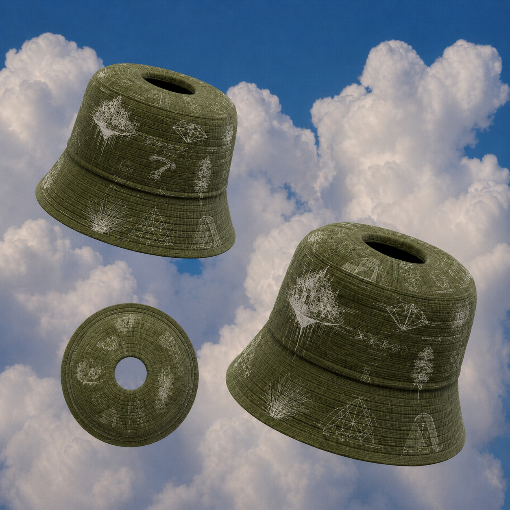
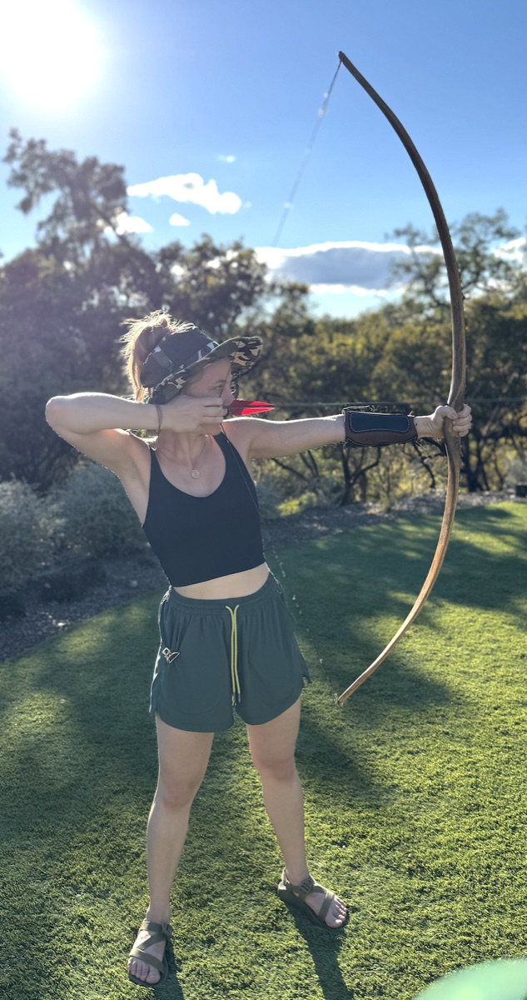
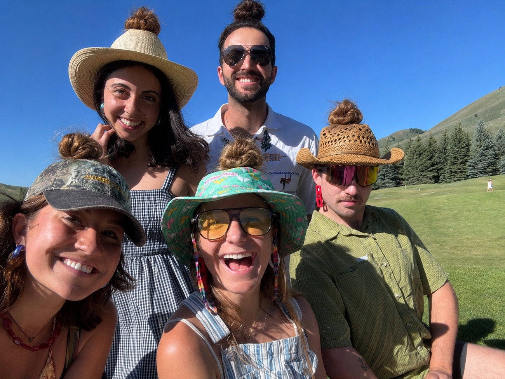
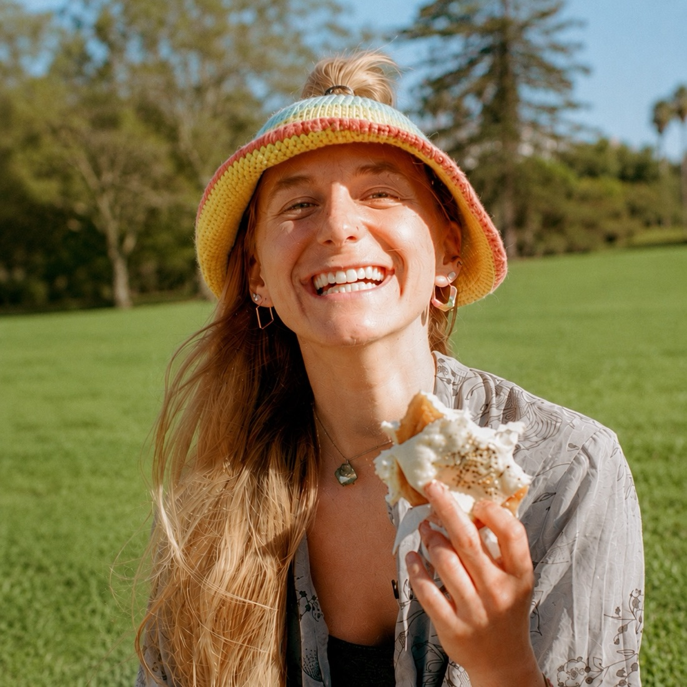
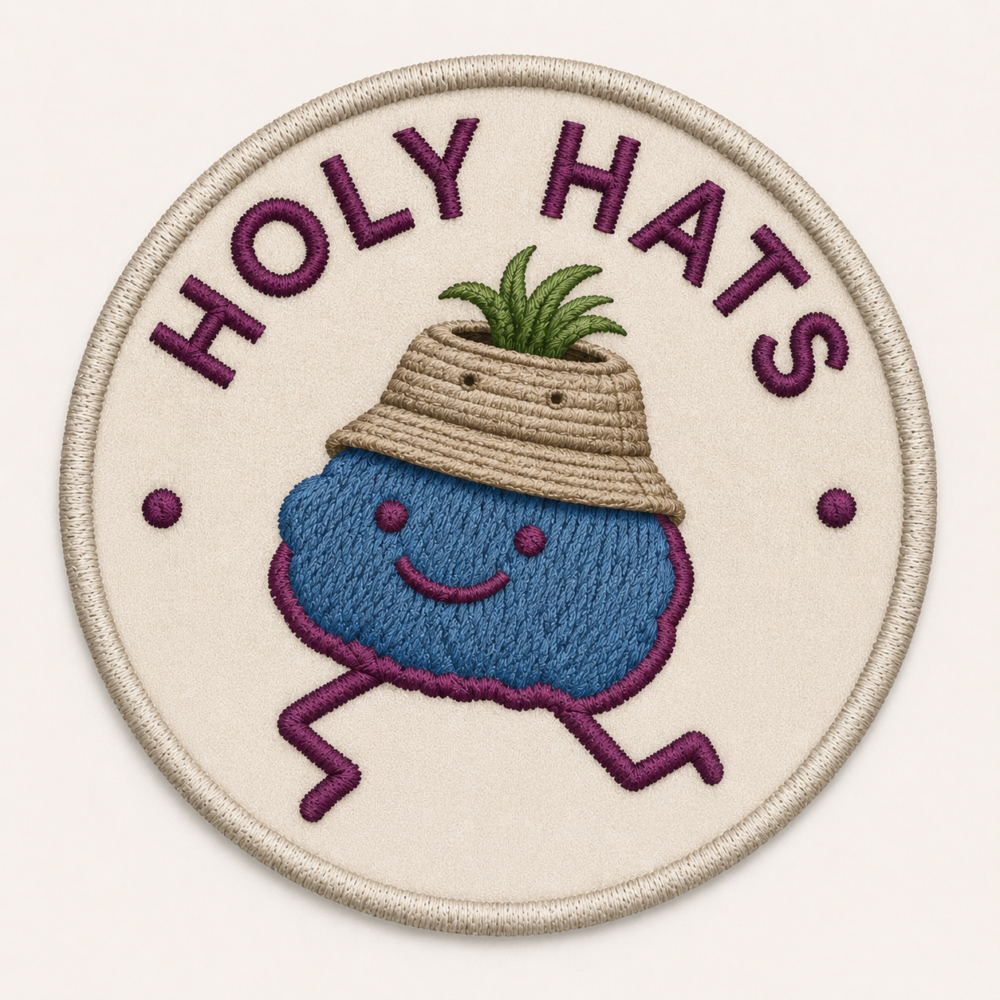

Ever wanted to wear your fashionable top-knot up, get real sun protection, but not look like a granny at a casino in a foam visor? For all of human history you had to pick two. HolyHats lets you have it all.
Here's what it is: a bucket hat with a hole in the top. Your top-knot — your bun, your buns — goes through the hole and out the crown. Hair's up, face is shaded, and you look like the hippest person in town. No visor. No granny. No compromise.
You might think "make the hole big." Wrong. The hole is small on purpose — when it's snug around your bun, your own hair holds the hat down. No chin strap garroting you under the jaw. A gust hits, and where a normal hat sails into the sea, your HolyHat stays put — anchored by the magnificent bun God gave you.

The market? Enormous. Every single person has a head. Most of them. And every head deserves a little divine airflow.
"But what if my bun isn't big enough to anchor it?" Glad you asked — that's expansion revenue. We'll also sell fake buns: toupee technology, relocated to the summit. Clip-in structural buns so even the bun-less achieve full hat-retention. We don't just sell the hat — we sell the hair that holds it on.
A HolyHat repping Edge City. So rad and so functional that strangers stop you to ask where you got it — your opening to talk about Edge and genuinely blow their mind. A hat that does your networking for you.
Bring your own art, and we print it on an RTV HolyHat made just for you. Your design, our ocean-net nylon, zero waste.
Two holes. Two buns. Double the anchoring, double the halo, double the glory. We're not there yet. But we're going.
The colloquial name for the hole-in-the-top situation. There's a hole. It's glorious. People named it themselves. We simply allowed it.
Sun comes through the crown hole and gilds the top of your head with a perfect little tan-line halo. You leave summer looking anointed. Sainthood optional, tan-line included.
The top of your head has some of the most underused vitamin D receptors on the body. HolyHats opens the channel — you're shaded AND synthesizing. Works whether you're bald or hairy. The most inclusive hole in fashion.
I'm working with Return to Vendor (RTV) — their nylon is spun from recycled ocean fishing nets (~46% of ocean plastic by weight). Breakthrough chemistry depolymerises and rebuilds that nylon over and over with almost no yield lost — truly infinitely recyclable, PFAS-free, ~70% lower CO₂, and at price parity with virgin. Want a new design later? We grind it up and make you a new one. You're quite literally pulling nets out of the sea and wearing them on your head.






We envision a world where every head is cool, breezy, shaded, blessed, and quietly cleaning the ocean — where "there's a hole in your hat" stops being an insult and becomes the highest compliment one human can pay another.
HolyHats — great for the bald and hairy alike. A hole new way to wear your hair and tan your top.